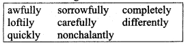

Question 3.
Had Margie ever seen a book before?
Answer:
No, Margie had never seen a book before.
Question 4.
What things about the book did she find strange?
Answer:
The book had yellow and wrinkled pages.
The words of the book were still. They did not move as the words move on the computer screen. She found these things strange.
Question 5.
What do you think a telebook is?
Answer:
A telebook is displayed on the television screen and the text of a telebook is similar to a book.
Question 6.
Where was Margie’s school? Did she have any classmates?
Answer:
Margie’s school was near her own bedroom. She did not have any classmate.
Question 7.
What subjects did Margie and Tommy learn?
Answer:
Margie learnt Geography and Mathematics. Tommy learnt History and Mathematics.
II. Answer the following with reference to the story.
Question 1.
“I wouldn’t throw it away.”
Who says these words?
What does ‘it’ refer to?
What is it being compared with by the speaker?
Answer:
Margie says these words.
It refers to that real book that Tommy found.
The speaker compares it with a telebook.
Question 2.
“ Sure, they had a teacher, but it wasn’t a regular teacher. It was a man.”
Who does ‘they’ refer to?
What does ‘regular’ mean here?
What is it contrasted with?
Answer:
‘They’ refer to the people of the old times.
Here, regular refers to the mechanical teacher then they had.
It is contrasted with a normal teacher of earlier times, who was a living human being.
III. Answer each of these questions in a short paragraph (about 30 words).
Question 1.
What kind of teachers did Margie and Tommy have?
Answer:
Margie and Tommy had mechanical teachers. They were taught on computers and television screens. They didn’t have a living person as a teacher who would teach the pupils in a classroom.
Question 2.
Why did Margie’s mother send for the County Inspector?
Answer:
Margie’s mother sent for the County Inspector because the mechanical teacher was not functioning efficiently. It had been giving her test after test in geography and she had been doing worse and worse.
Question 3.
What did he do?
Answer:
He slowed down the mechanical teacher’s speed upto an average ten-year level. The mechanical teacher’s speed was controlled and adjusted according to the IQ level of Margie.
Question 4.
Why was Margie doing badly in geography? What did the County Inspector do to help her?
Answer:
Margie had been doing badly in geography. This was because the mechanical teacher was very fast in displaying the questionnaire. The County Inspector adjusted its speed upto an average ten-year level. Thus, the mechanical teacher’s speed was controlled appropriately. The County Inspector assured that the overall pattern of Margie’s progress was quite satisfactory.
Question 5.
What had once happened to Tommy’s teacher?
Answer:
Tommy’s teacher was taken away for nearly a month because the history sector had blanked out completely. So, Tommy had nothing to do during that period. He only relaxed and enjoyed.
Question 6.
Did Margie have regular days and hours for school? If so, why?
Answer:
Yes, Margie had regular days and hours for school because her mother said little girls learned better if they learned at regular hours.
Question 7.
How does Tommy describe the old kind of school?
Answer:
Tommy says that the old schools were different. They had a special building and all the kids went there to study. They laughed and shouted in the schoolyard. They enjoyed time together and learned lessons together in a classroom.
Question 8.
How does he describe the old kind of teachers?
Answer:
He says that the old teachers did not live in the house. They had a special building and all the kids went there. They gave homework to students. They were not mechanical teachers, but living human beings.
IV. Answer each of these questions in two or three paragraphs. (100-150 words).
Question 1.
What are the main features of the mechanical teachers and the schoolrooms that Margie and Tommy have in the story?
Answer:
Margie and Tommy have mechanical teachers. They need not go to school for getting a formal education. The mechanical teacher is placed in one of the rooms of the house and they can get the knowledge of various subjects of individually from the mechanical teacher. They don’t have such classrooms where students sit together. They study from the telebooks. So they don’t require books and exercise books. The examination system is very different. They do homework in a different way. Margie has to write them out in a punch code. She leamt it when she was six years old. So the system of their education is technologically advanced and not based on printed books.
Question 2.
Why did Margie hate school? Why did she think the old kind of school must have been fun?
Answer:
Margie hated her school because she had a mechanical teacher. It was in her house. She was supposed to sit in that room alone to complete her hometask or assignments. The part Margie hated most was the slot where she had to put homework and test papers. She thought that the old schools must have been fun because the students used to sit together in the classroom. They enjoyed, laughed and shouted in the schoolyard. Children needed company to enhance their skills. If they are isolated, they get depressed and dejected.
Question 3.
Do you agree with Margie that schools today are more fun than the school in the story? Give reasons for your answer.
Answer:
There is no doubt that today’s schools are more funny than the future school discussed in the story. This school has nothing but a mechanical teacher with no emotions and sentiments. It does not have the ability to understand the psychology of a child. Moreover, it guides a pupil according to its adjusted modes. But today’s schools work for the overall development of a child. They learn the same thing. The teaches are real human beings. They leam how to adapt themselves to the new surroundings and cope with the strangers. The students sit and leam together. These activities don’t give vent to the feelings of depression, alienation and segregation.
Thinking about language (Page 11)
I. Adverbs
Read this sentence taken from the story:
They had once taken Tommy’s teacher away for nearly a month because the history sector had blanked out completely. The word complete is an adjective. When you add -ly to it, it becomes an adverb.
Question 1.
Find the sentences in the lesson which match adverbs given in the box below,

Answer:
awfully --> and it was awfully funny… (para 1)
sorrowfully --> until her mother had shaken her head sorrowfully… (para 3)
completely --> the history sector had blanked out completely (para 5)
loftily -->He added loftily… (para 6)
carefully --> pronouncing the word carefully,… (para 6)
differently --> each kid has to be taught differently, (para 8)
Question 2.
Now use these adverbs to fill in the blanks in the sentences below.
The report must be read ……………….. so that performance can be improved.
At the interview, Sameer answered our questions ……………….., shrugging his shoulders.
We all behave ……………….. when we are tired or hungry.
The teacher shook her head ……………….. when Ravi lied to her.
I ……………….. forgot about it.
When I complimented Revathi on her success, she just smiled ……………….. and turned away.
The President of the Company is ……………….. busy and will not be able to meet you.
I finished my work ……………….. so that I could go out to play.
Answer:
Remember:
An adverb describes action. You can form adverbs by adding -ly to adjectives.
Spelling Note: When an adjective ends in -y, the y changes to i when you add -ly to form an adverb.
For example: angr-y → angr-i-ly
• Imagine that Margie’s mother told her, “You’ll feel awful if you don’t finish your history lesson.”
• She could also say: “You’ll feel awful unless you finish your history lesson.” Unless means if not. Sentences with unless or if not are negative conditional sentences.
Notice that these sentences have two parts. The part that begins with if not or unless tells us the condition. This part has a verb in the present tense (look at the verbs don’t finish, finish in the sentences above).
The other part of the sentence tells us about a possible result. It tells us what will happen (if something else doesn’t happen). The verb in this part of the sentence is in the future tense (you ’ll feelI you will feel).
Notice these two tenses again in the following examples:
Future Tense Present Tense
• There won’t be any books left unless we preserve them.
• You won’t leam your lessons if
you don’t
study
regularly.
• Tommy will have an accident unless he drives more slowly.
Question 1.
Complete the following conditional sentences. Use the correct form of the verb.
If I don’t go to Anu’s party tonight,
………………………..
If you don’t telephone the hotel to order food,
………………………..
Unless you promise to write back, I
………………………..
If she doesn’t play any games,
………………………..
Unless that little bird flies away quickly, the cat
………………………..
Answers:
If I don’t go to Anu’s party tonight, she will get annoyed.
If you don’t telephone the hotel to order food, you will miss your evening meal.
Unless you promise to write back, I shall keep requesting you.
If she does not play any games, she will become lethargic and unfit.
Unless that little bird flies away quickly, the cat will pounce on it.